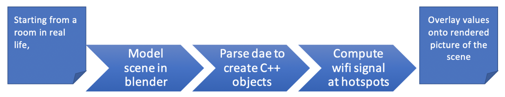
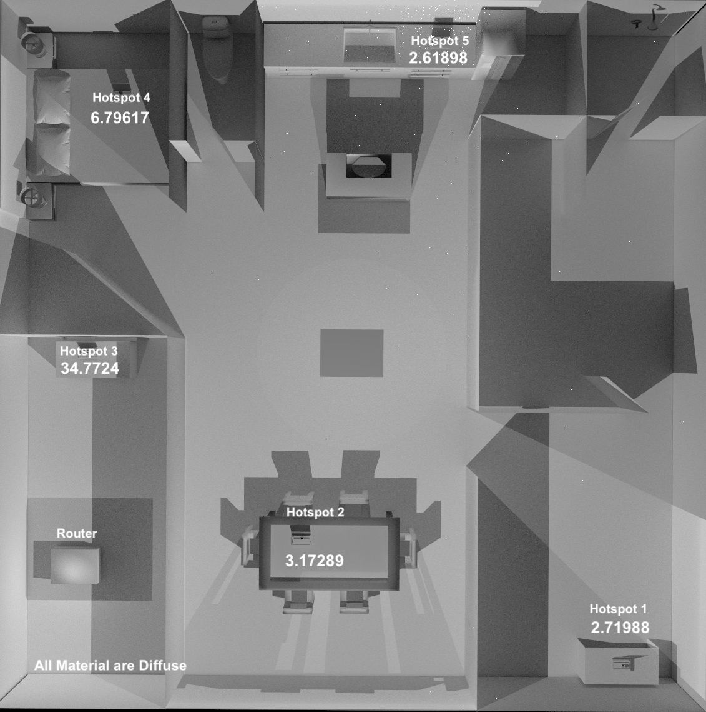
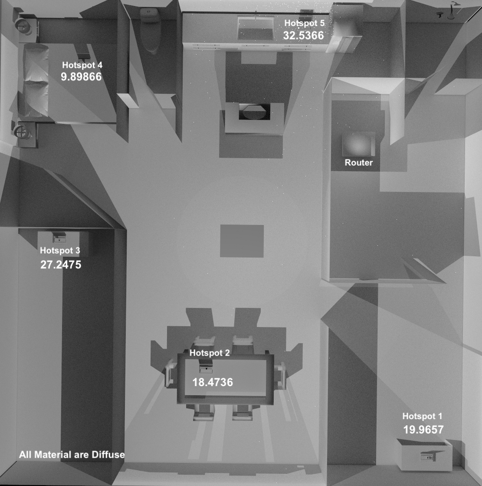
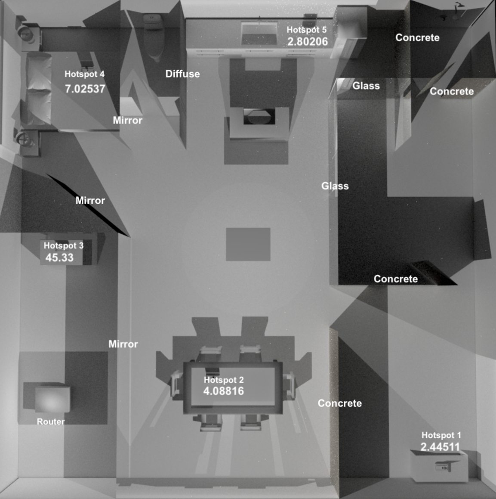
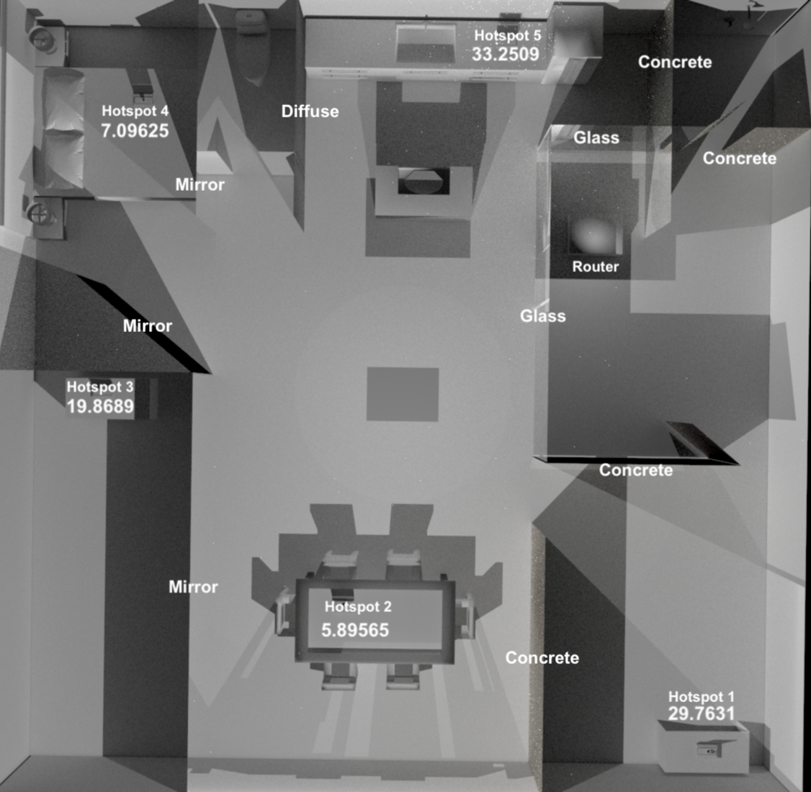

Abstract
We modeled radio frequency (RF) rays interacting with realistic materials so users can find the router placement that maximizes WiFi connection at the points where they use it most. We created a realistic office scene, complete with a couple rooms, desks, wifi-connected devices, and routers. We took project 3-2 as a foundation and introduced two new abstractions: router and hotspot. We made the router shoot RF rays into the scene uniformly at random. Hotspots are spheres centered around the device. When a ray from the router intersects with a hotspot, we record the phase and brightness. Once all the rays have been traced, we aggregate all the rays which intersected with each hotspot as sine(phase) * brightness. Then we render the scene from a birds eye view and overlay our computed wifi signal values onto the hotspots.
Technical approach
Pipeline

Scene modeling and parsing (Real life -> RfTracer Engine)
The .dae collada files we created in blender contained objects that pathtracer couldn’t read. We found that pathtracer relied heavily on simple objects such as planes and spheres, offering little support for anything else. After experimenting with different materials, we decided to use glass, mirror, and concrete. We then imported compatible .dae files to fill the space. Then, we manually changed variable names and imported material/ effects that were compatible with the XML parser.
To build a Collada scene from .dae in RfTracer, we changed the collada parser in the project 3 to read in our special router and hotspot objects.
Computing Wifi values
Problems
We ran into two significant challenges in our implementation: refactoring and const.
Minos: Might want to add here
We opted to use the staff binary for 3-2 so when we needed to modify components of 3-1 to model RF, we had to start by integrating our 3-1 code in with our 3-2 code.
Const is all over the place in the 3-2 raytracer. This made it very difficult to figure out where to record the phase and brightness values for rays without refactoring major parts of 3-2. This ended up being a frustrating, yet interesting design problem.
Summary
Minos: is this below accurate?
We generated rays, uniformly at random in the sphere encompassing the router. We modified the BSDFs of each material to scale the rays brightness down by some factor that we decided upon after researching the way RF rays interact with that material. We kept track of how many rays intersect each hotspot, storing the state of the wave ( phase, which is
time%frequency(either 2.4 GHZor 5 GHZ), and amplitude (brightness)).
We placed light sources under each router so we could use the brightness of the ray as a heuristic for the amplitude of the RF wave. Then we combine these sinusoids using a weighted sum of the rays
sin(phase) * amplitude. With this equation we were able to mimic phase interference and obtain our final value representing the total wifi signal at that hotspot.
Decisions
We had two major decisions to make to compute wifi values.
How to model routers, devices, and rays
Initially, we wanted to create a heat map. We decided to render a birds eye view of the scene, with routers as light sources. One major drawback to this approach was the increase in complexity of figuring out ray interference and the fact that our image was limited to wifi rays that managed to intersect with our floating birds eye camera.
We opted for a more realistic, and doable approach where we compute wifi signal at the hotspots. Unfortunately, no meaningful picture is generated. But, we could compute interference by aggregating all the rays that intersect with our devices. This also captured every router ray that intersected with a hotspot.
What should go into calculating wifi signal and how to aggregate them.
We initially wanted to just include brightness. Every render would produce a heat map where the brighter points in the picture correspond to better reception.
We ultimately opted for brightness and phase. This allowed us to capture interference effects where waves can amplify or cancel each other out.
Lessons
Amir relearned sinusoidal math, the purpose of const in C++, and gained a much deeper understanding of the Project 3 codebase and ray tracing. He also enhanced his project management skills, coordinating different talents, and organizing the logistics of scheduling meetings with 3 busy college students.
Quetza I learned how to use blender and how to read/parse dae files. With the information I gained I was able to create new libraries and modify existing code. I also researched how WiFi signals interacted with different material such as metal which repels WiFi rays. From what I found, I was able to adjust/change the properties of the walls to get a more realistic setting.
Minos
Results




References
- Reference projects:
- Resources
Contributions
Quetza learned how 3-2 ingest a scene, fixed compatibility issues between blender and 3-2’s parser, and created custom objects in blender to represent the router, hotspots
and a couple of materials: concrete, glass, mirror, diffuse.
Amir researched a method of combining rays contributions to capture RF interference. He also collaborated with Minos to implement the router/hotspot objects in the raytracer and aggregate the rays contributions using the researched aggregator function.
Minos collaborated with Amir to implement the router/hotspot objects in the raytracer and aggregate the rays contributions using the researched aggregator function. He also hooked up the blender router/hotspot objects to the XML parser to populate our C++ abstractions with the blender data.